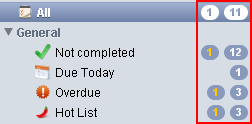

General
- Look and feel:
-
Change the theme and the general look of TaskUnifier.
- Show count note badges:
-
Show the number of notes in each searcher. See screenshot 1).
- Show count task badges:
-
Show the number of tasks in each searcher. See screenshot 1).
- Show the note editor in the notes view:
-
Choose where you want to display the note editor in the notes view.
- Colors by importance:
-
If you select this, the task background color will be set depending on its importance.
- Color of task progress:
-
Define the background color of the progress bar.
- Colors enabled:
-
Set the background color of all the rows in TaskUnifier.
1) 